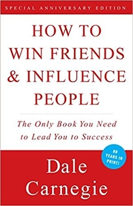
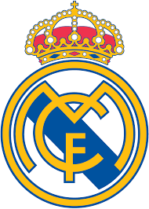

Book
How to Win Friends and Influence People
How to Win Friends and Influence People is a self-help book written by Dale Carnegie, published in 1936. Over 30 million copies have been sold world-wide, making it one of the best-selling books of all time. In 2011, it was number 19 on Time Magazine's list of the 100 most influential books
Music
Best of Marshmellow
Christopher Comstock, known professionally as Marshmello, is an American electronic dance music producer and DJ. He first gained international recognition by remixing songs by Jack Ü and Zedd, and later collaborated with artists including Omar LinX, Ookay, Jauz and Slushii
Sport Clubs
Real Marid FC
Real Madrid Club de Fútbol, commonly known as Real Madrid, or simply as Real, is a professional football club based in Madrid, Spain. Founded on 6 March 1902 as Madrid Football Club, the club has traditionally worn a white home kit since inception